04 Op Amp And Its Applications
Operational Amplifier
Block diagram of an op-amp:
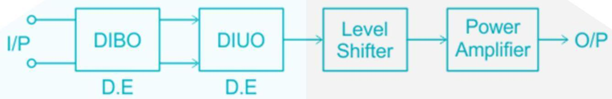
Op-amp is a high gain, direct coupled amplifier, used to do all the mathematical operations.
Open loop gain →∞
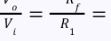
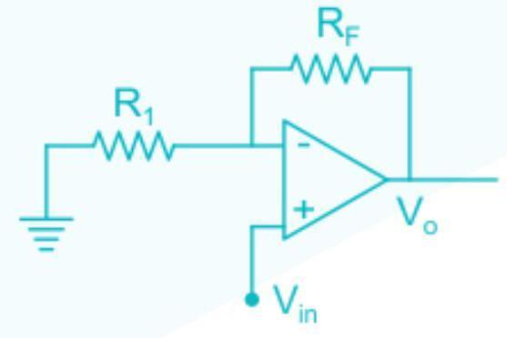
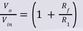
Op-amp as a summer

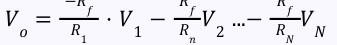
Op-amp as voltage follower
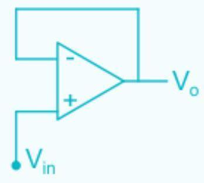
It is used for impedance matching It has unity gain It has high input impedance and very low output impedance
Voltage to current converter
If then this configuration has 𝑅 1 𝑅 3 = 𝑅 𝑓 𝑅 2 −𝑉 𝑖𝑛 1. this current is independent of hence called current source 𝐼 𝐿 = 𝑅 𝐿 𝑅 2
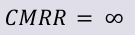
2.
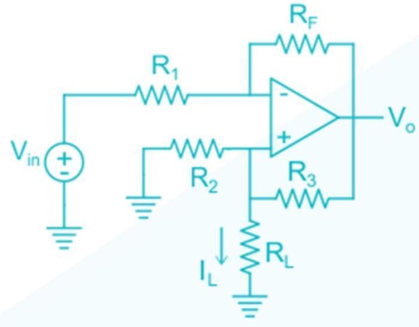
Differential amplifier
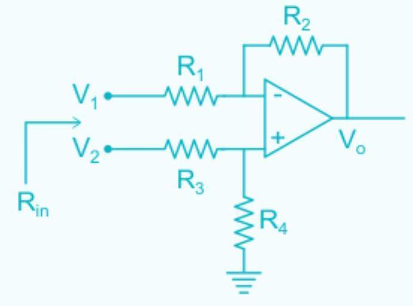
𝑅 2 [] 𝐼𝑓 𝑅 2 𝑅 3 = 𝑅 1 𝑅 4 𝑡ℎ𝑒𝑛 𝑉 𝑜 = 𝑅 1 𝑉 2 −𝑉 1
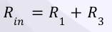
Op-amp as an integrator

𝑉 𝑜 −1 𝑉 𝑖𝑛 = 𝑅𝐶𝑆 𝑉 𝑜 (𝑡) ∝∫𝑉 𝑖𝑛 (𝑡)𝑑𝑡
Op-amp as a differentiator
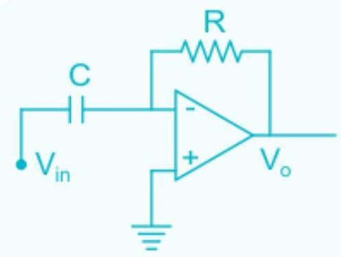
𝑉 𝑜 𝑉 𝑖𝑛 =−𝑅𝐶𝑆 𝑑 𝑉 𝑜 (𝑡) ∝ 𝑑𝑡 𝑉 𝑖𝑛 (𝑡)
Op-amp as log amplifier
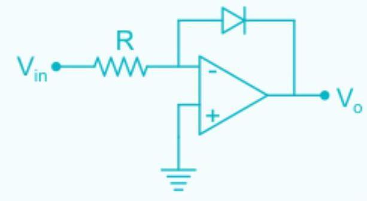
() 𝑉 𝑜 ∝𝑙𝑜𝑔 𝑒 𝑉 𝑖𝑛
Op-amp as antilog or exponential amplifier
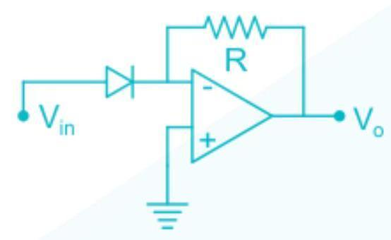
𝑉 𝑖𝑛 (𝑡) 𝑉 𝑜 ∝𝑒
Op-amp as precision diode
In normal diodes, if, then diode remains off but in precision diode even voltage
𝑉 𝑖𝑛 < 𝑉 𝑟 of milli volt make diode ON because of high gain of the amplifier.
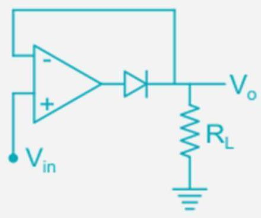
Op-amp as half wave rectifier
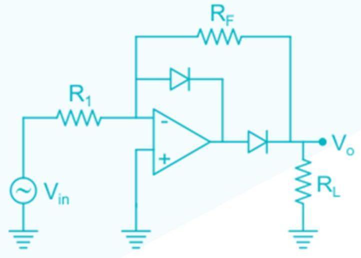
Op-amp as full wave rectifier

Op-amp as astable multi-vibrator

Op-amp as Schmitt trigger
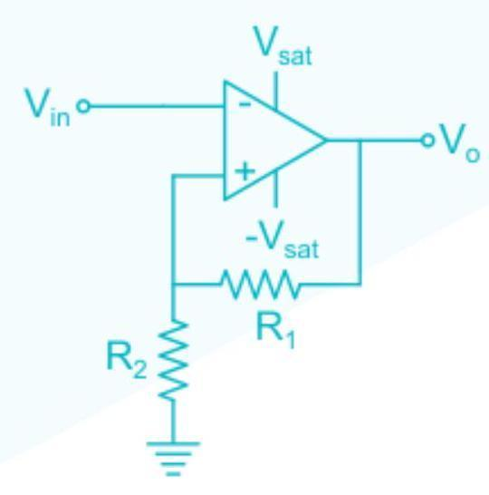
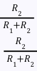
If reference voltage is used:

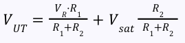
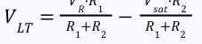
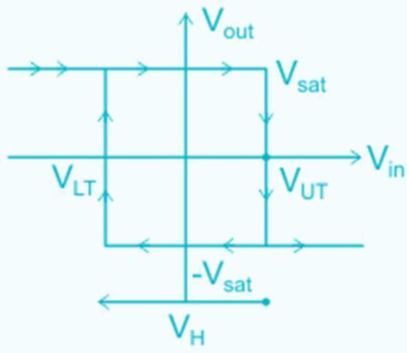
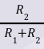
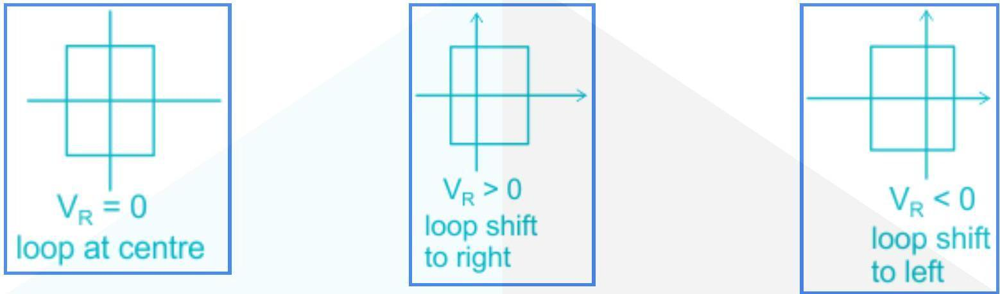
Difference between Ideal and Practical OP-AMP
| Parameter | Ideal | Practical |
|---|---|---|
| gain | ∞ | 5 2 × 10 𝑉/𝑣 |
| 𝑅 𝑖𝑛 | ∞ | 10𝑀Ω |
| 𝑅 0 | 0 | 75Ω |
| B.w | ∞ | 1 MHz |
| CMRR | ∞ | 80 − 100 𝑑𝐵 |
| S.R | ∞ | 1 𝑉/µ𝑠𝑒𝑐 |
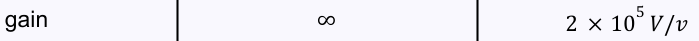
Slew rate
It is defined as rate of change of output voltage with change in time.
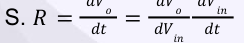
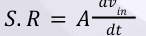
For 𝑉 𝑖𝑛 = 𝐴 𝑚 𝑠𝑖𝑛𝑤 𝑚 𝑡 𝑑𝑉 𝑖𝑛 = 𝐴 𝑚 𝑤 𝑚 𝑐𝑜𝑠𝑤 𝑚 𝑡 𝑑𝑡 ||| ||| 𝑚𝑎𝑥
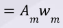
𝑑𝑡
From (1) 𝑑𝑉 𝑖𝑛 ||| ||| 𝑚𝑎𝑥 |𝑆. 𝑅| 𝑚𝑎𝑥 = 𝐴 𝑑𝑡
𝐼𝑆. 𝑅𝐼 𝑚𝑎𝑥 = 𝐴· 𝐴 𝑚 𝑊 𝑚 If S.R is less, then output does not changes as fast as input and hence output signal get distorted.
Frequency Response
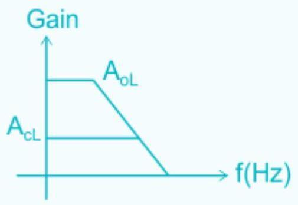
Op-amp can be assumed as a low pass filter
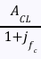
Hence, 𝐻(𝑓) =
Input off set voltage
It is the voltage we need to apply at the input so that output become zero.

𝑅 1 ⎡⎢⎣ ⎤⎥⎦ () 𝑉 𝑖𝑜 = 𝑉 𝑜 𝑅 1 +𝑅 2
Compensation resistance:
𝑅 𝑐𝑜𝑚
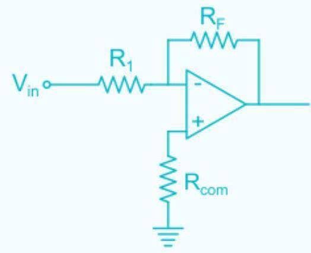
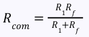
Filters using op-amp
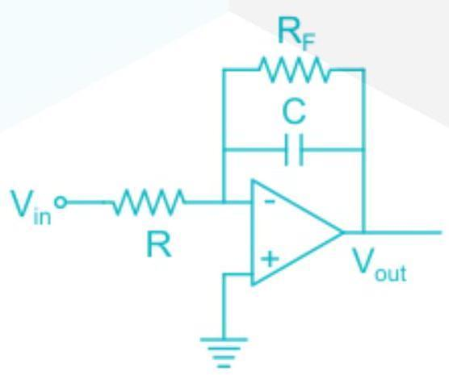
Low Pass Filter 1 𝑓 𝑐 = 2π𝑅 𝑓 𝑐
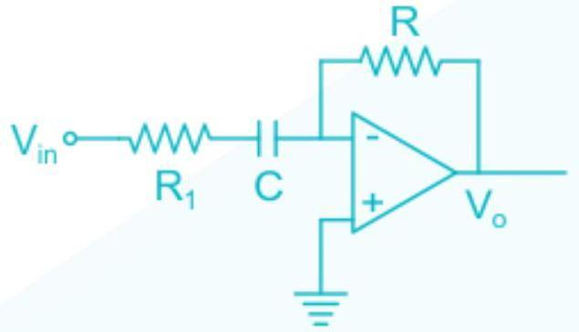
HPF 1 𝑓 𝑐 = 2π𝑅 1 𝑐
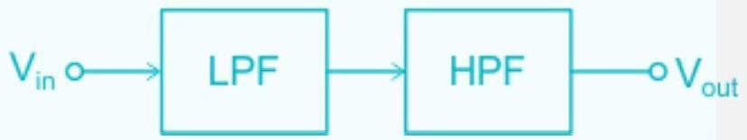
Band Pass Filter
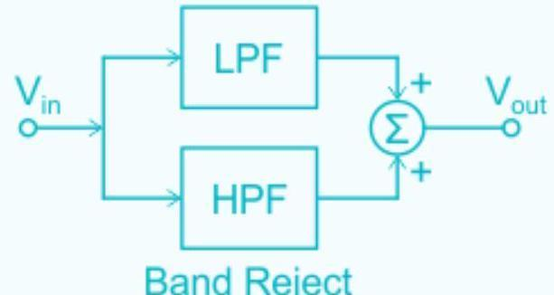
All pass filter
It has unity gain for all frequency.
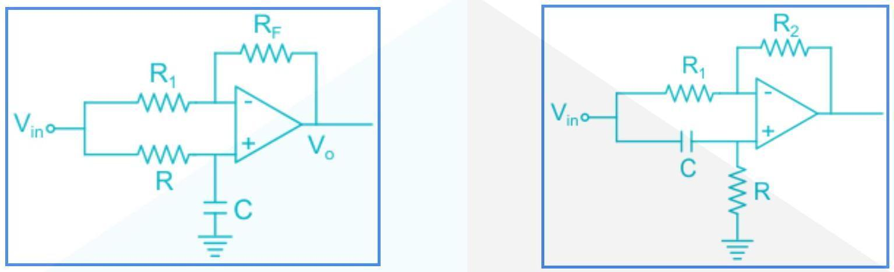
It is used to provide only phase change (either increase or decrease the phase angle) according to operating frequency.
𝑛𝑑
order filter transfer functions
2
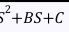
𝑃𝑆 BPF:
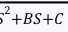
𝐴𝑆 2 𝑃𝑆 HPF:
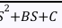
𝐴𝑆 𝑃𝑆+𝑄 BRF:
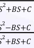
𝐴𝑆 𝐴𝑆 APF:
𝐴𝑆